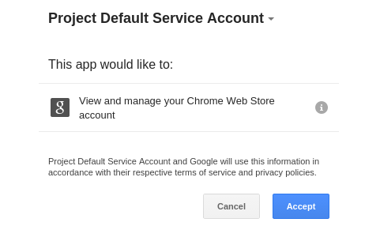
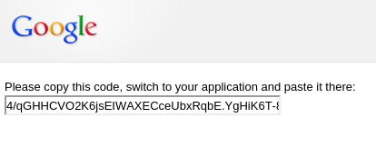

The Chrome Web Store Publish API provides a set of REST endpoints for programmatically creating, updating, and publishing items in the Chrome Web Store. Using this API, you can automate the process of uploading and publishing items into the store.
To use the Chrome Web Store Publish API, you need to enable the API for your project in the Google Developers Console.
Once you have the client ID and client secret, you can retrieve an access token to work with the API. For example, enter this URL in your browser, replacing the $CLIENT_ID with the one for your app:
https://accounts.google.com/o/oauth2/auth?response_type=code&scope=https://www.googleapis.com/auth/chromewebstore&client_id=$CLIENT_ID&redirect_uri=urn:ietf:wg:oauth:2.0:oob
You will see a page asking you to accept permission for the requested scope.
NOTE: Make sure you are requesting the token using the Google Account which owns the Chrome Web Store apps you want to manage. This account can be different from the account you create the Google Developers Console project with. For example, you can create an application for other developers to manage their apps, in which case you only need to register a Google Developers Console project.
Click the Accept button and you will see a code that looks something like this:
Use this value to request an access token.
For example, using curl,
you can get an access token by executing the following command (replacing
the values of $CLIENT_ID, $CLIENT_SECRET, and $CODE with the values from
above):
> curl "https://accounts.google.com/o/oauth2/token" -d \ "client_id=$CLIENT_ID&client_secret=$CLIENT_SECRET&code=$CODE&grant_type=authorization_code&redirect_uri=urn:ietf:wg:oauth:2.0:oob"
This will return a result such as:
{
"access_token" : "ya29...",
"token_type" : "Bearer",
"expires_in" : 3600,
"refresh_token" : "1/rwn..."
}
You can now use the access_token to call the API. You can also use the refresh token to get future access tokens. Note that tokens expire after 40 minutes.
NOTE: For more information about getting OAuth 2.0 access tokens, see Using OAuth 2.0 to Access Google APIs.
Once you have an access token, your app can then use the Chrome Web Store Publish API. There are endpoints for creating items, updating items, and publishing items.
NOTE: Currently, there is no API for setting an item’s metadata, such as description. This has to be done manually in the Chrome Web Store developer dashboard. More detail about the Web Store API can be found here.
Endpoint: https://www.googleapis.com/upload/chromewebstore/v1.1/items Type: POST Header Parameters: $TOKEN: the access token Body content: the package file to uploadType the following example on the command line:
> curl \ -H "Authorization: Bearer $TOKEN" \ -H "x-goog-api-version: 2" \ -X POST \ -T $FILE_NAME \ -v \ https://www.googleapis.com/upload/chromewebstore/v1.1/items
Endpoint: https://www.googleapis.com/upload/chromewebstore/v1.1/items/$APP_ID Type: PUT Header Parameters: $TOKEN: the access token Body content: the package file to upload
$APP_ID is the ID of the existing Web Store item.
> curl \ -H "Authorization: Bearer $TOKEN" \ -H "x-goog-api-version: 2" \ -X PUT \ -T $FILE_NAME \ -v \ https://www.googleapis.com/upload/chromewebstore/v1.1/items/$APP_ID
Endpoint: https://www.googleapis.com/chromewebstore/v1.1/items/$APP_ID/publish Type: POST Header Parameters: $TOKEN: the access token
> curl \ -H "Authorization: Bearer $TOKEN" \ -H "x-goog-api-version: 2" \ -H "Content-Length: 0" \ -X POST \ -v \ https://www.googleapis.com/chromewebstore/v1.1/items/$APP_ID/publish
Endpoint: https://www.googleapis.com/chromewebstore/v1.1/items/$APP_ID/publish Type: POST Header Parameters: $TOKEN: the access token, publishTarget: trustedTesters
> curl \ -H "Authorization: Bearer $TOKEN" \ -H "x-goog-api-version: 2" \ -H "Content-Length: 0" \ -H "publishTarget: trustedTesters" \ -X POST \ -v \ https://www.googleapis.com/chromewebstore/v1.1/items/$APP_ID/publish
Endpoint: https://www.googleapis.com/chromewebstore/v1.1/items/$APP_ID/publish Type: GET Header Parameters: $TOKEN: the access token
curl \ -H "Authorization: Bearer $TOKEN" \ -H "x-goog-api-version: 2" \ -H "Content-Length: 0" \ -H "Expect:" \ -X GET \ -v \ https://www.googleapis.com/chromewebstore/v1.1/items/$APP_ID?projection=draft{{/partials.standard_store_article}}